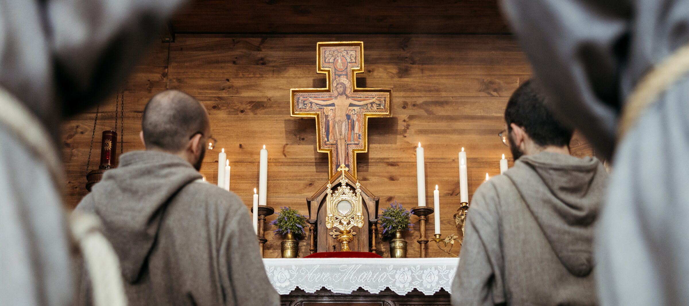
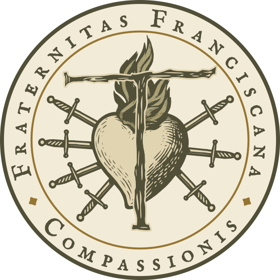
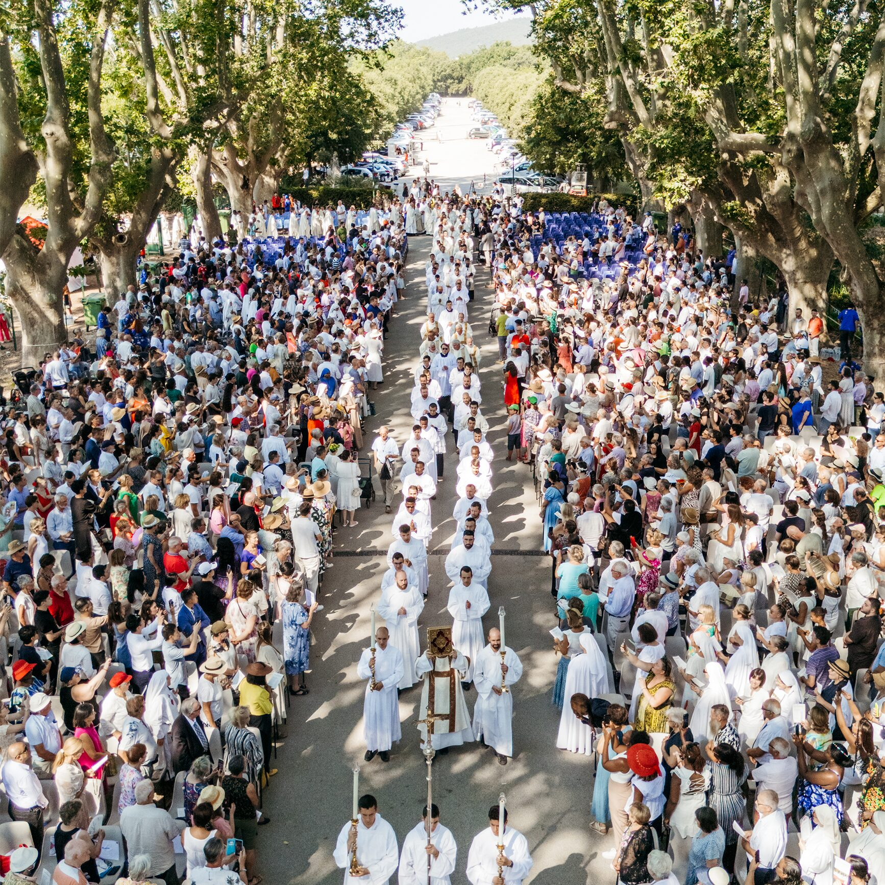
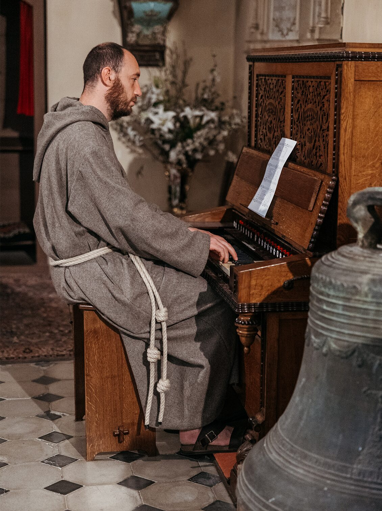
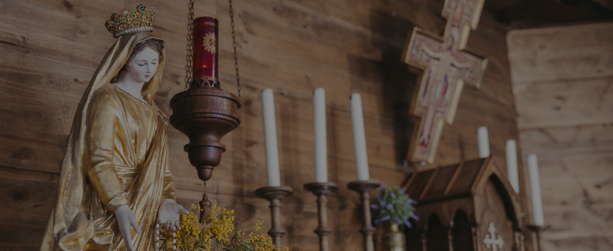
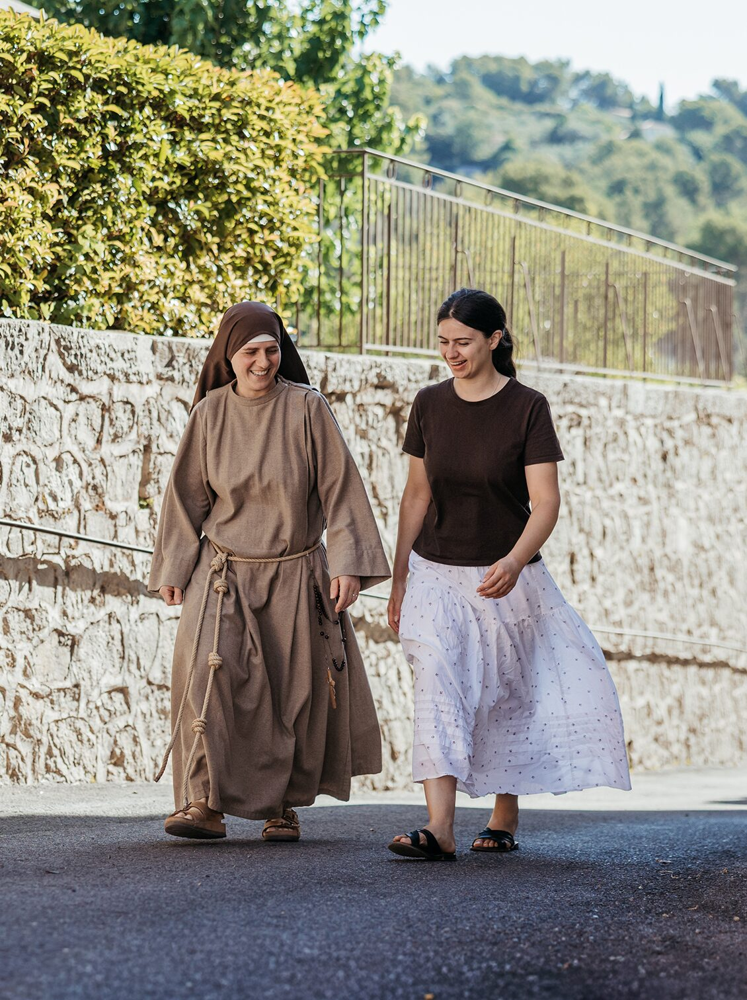

Una fraternità francescana, fondata sulla compassione.
I frati francescani della Compassione vivono insieme come fratelli, uniti dal desiderio di seguire Cristo e sua madre Maria, spinti dalla chiamata alla misericordia.


Celebrazioni, incontri ed eventi
Prossimi appuntamenti
I due pilastri
Compassione e comunione: il cuore di questa vocazione
Compassione: contemplare i dolori di Maria, chinarsi sulla miseria degli uomini, averne misericordia, farsi prossimi a chi soffre.
Comunione: vivere insieme come fratelli, in un'unica famiglia, condividendo preghiera, pasti, lavoro.
Due pilastri vissuti nella semplicità serafica di san Francesco d'Assisi, per incarnare oggi il Vangelo di Gesù Cristo.
«La regola e la vita dei frati minori è questa, cioè osservare il santo Vangelo»— San Francesco, Regola bollata, 1
Il percorso nella Chiesa
L'esperienza inizia nel 2016 come piccolo gruppo, spinto dal desiderio di vivere insieme la vita francescana nella compassione e nella comunione. Dal 2019 i frati sono riconosciuti come associazione di fedeli nella diocesi di Fréjus-Toulon, dove svolgono la loro vita di preghiera e di apostolato.
La vita dei frati
Preghiera, fraternità e servizio
La vita dei frati ruota attorno a Cristo, tra liturgia, silenzio, vita comune e apostolato.
Scopri il ritmo della vita fraterna e la missione dei frati francescani della Compassione.


Affidaci le tue intenzioni di preghiera
o richiedi la celebrazione di una Santa Messa.
Accoglieremo personalmente la tua richiesta e la uniremo
alla preghiera quotidiana della nostra fraternità.
Il blog della comunità
Notizie, riflessioni e articoli per approfondire la fede e seguire la vita della comunità.

Meditazioni sui Sette Dolori di Maria
Sul Calvario si potevano mirare due vittime: il Figlio, che sacrificava il corpo con la morte, e la Madre, che sacrificava l'anima con la compassione…
Leggi di più
I protomartiri dell'ordine francescano
A Marrakech, nel 1220, il sultano decapita sei frati francescani: la storia dei protomartiri e della vocazione che ne nacque…
Leggi di più
Santa Veronica Giuliani e la Madonna
La vita mistica di una clarissa cappuccina e il suo rapporto con la Madonna, appreso fin dall'infanzia…
Leggi di più
Quando Dio ti chiama
Cosa vuoi fare nella vita?
La vita ordinaria non ti basta più? Che progetti hai? E Dio che progetti ha su di te? Senti il desiderio di donarti totalmente a Dio?
Sostieni i frati e il loro apostolato.
Il tuo contributo permetterà alla comunità di vivere concretamente la compassione e la comunione del Vangelo.
SOSTIENICI